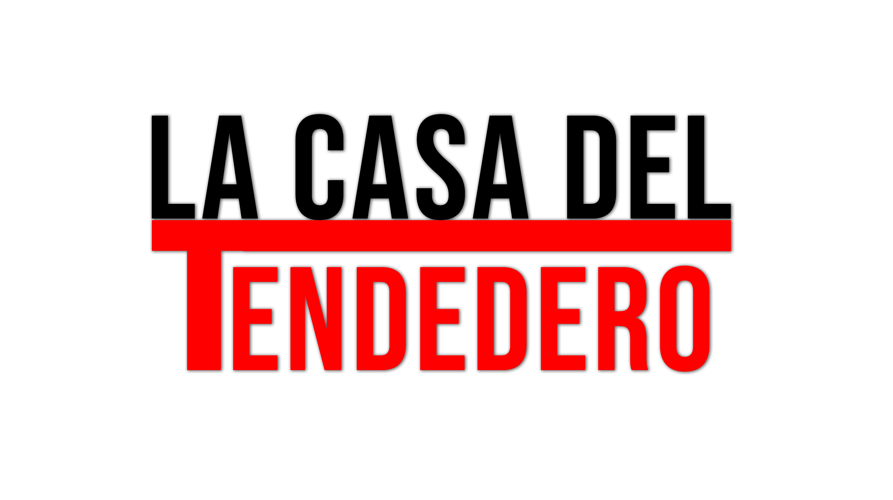

<!DOCTYPE html>
<html lang="en">
<head>
    <meta charset="UTF-8">
    <meta http-equiv="X-UA-Compatible" content="IE=edge">
    <meta name="viewport" content="width=device-width, initial-scale=1.0">
    <title>PRODUCTOS</title>
    <link href="https://cdn.jsdelivr.net/npm/bootstrap@5.2.3/dist/css/bootstrap.min.css" rel="stylesheet"
    integrity="sha384-rbsA2VBKQhggwzxH7pPCaAqO46MgnOM80zW1RWuH61DGLwZJEdK2Kadq2F9CUG65" crossorigin="anonymous">
<link rel="stylesheet" href="../Asset/styles.css">
</head>
<body>
    
</body>
</html>
<body class="fondo">
    <div class="navegador">
        <div>
            <a href="../index.html"></a>
            <nav class="logo">
        </div>

        <ul>
            <li><a href="../pages/contacto.html">CONTACTO</a></li>
            <li><a href="../pages/Resena.html">RESEÑAS</a></li>
            <li><a href="../pages/Productos.html">PRODUCTOS</a></li>
            <li><a href="../index.html">INICIO</a></li>

        </ul>
        </nav>
    </div>
    <main>
        <h1 class="titulo">
            LA CASA DEL TENDEDERO
        </h1>
        <H2>
            -PRODUCTOS MAS VENDIDOS-
        </H2>

        <P>
            En esta secion encontrará, las soluciones mas adecuadas para su casa departamento y por qué no, negocio
            tales como lavadero.
            nustros productos tinen una adaptabilidad y una vez que seleccione uno puede pactar una cita para su
            colocacion, amuracion y/o reparación.
            La Casa del tenderero, ofrece ademas garantia de colocacion y cita prioritaria en caso de alguna falla.
            tambien tenemos retiro en domicilio con movilidad propia. Las Citas de colocación/reparación y o venta
            se
            realizan desde el apartado contacto.-
        </P>

</body>